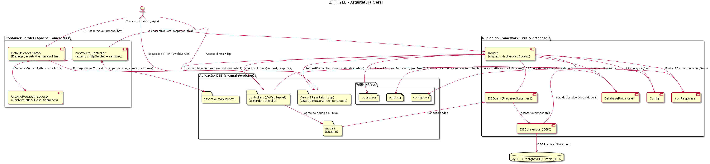
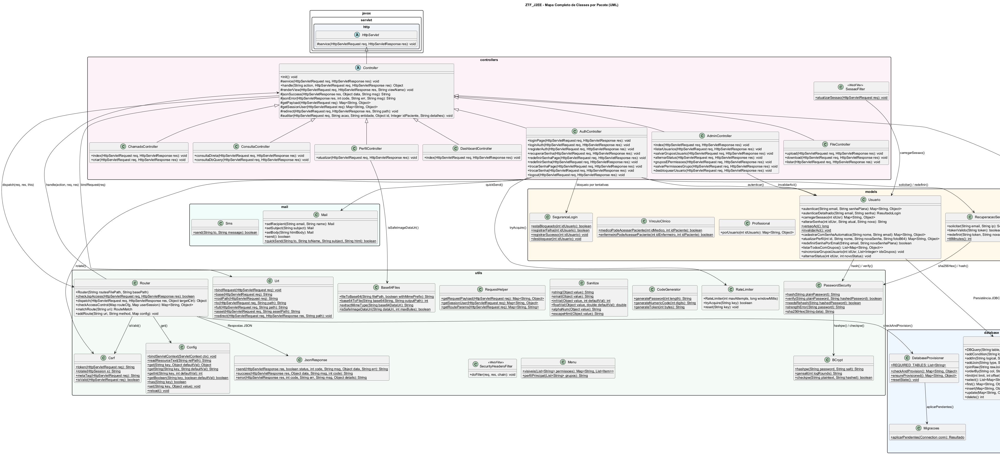
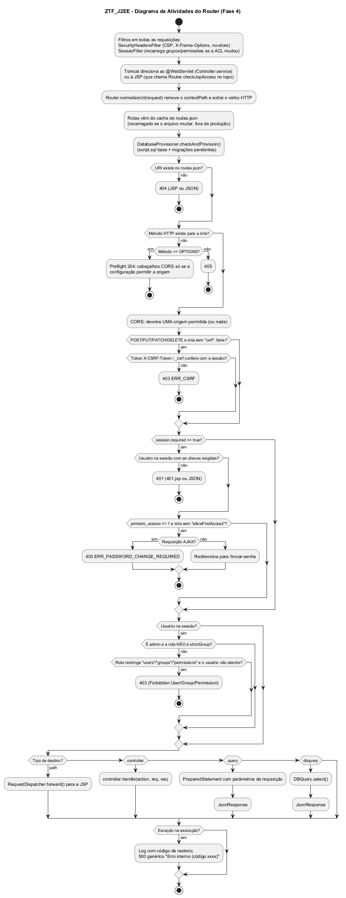
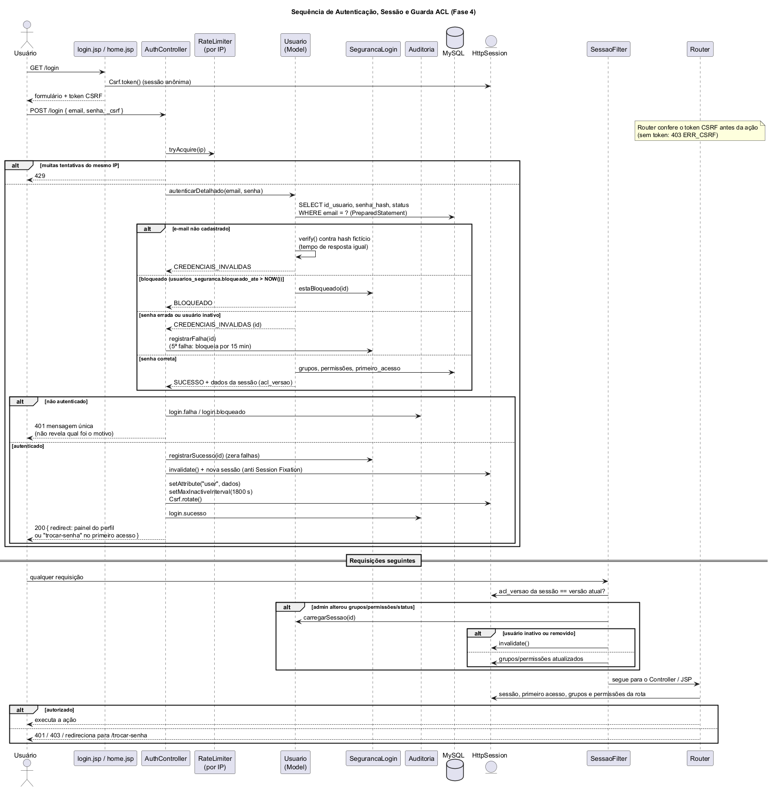
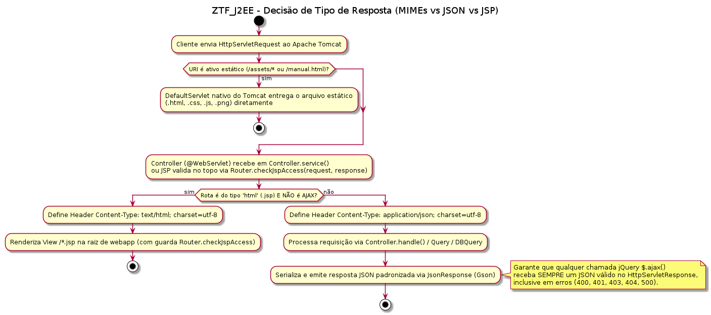
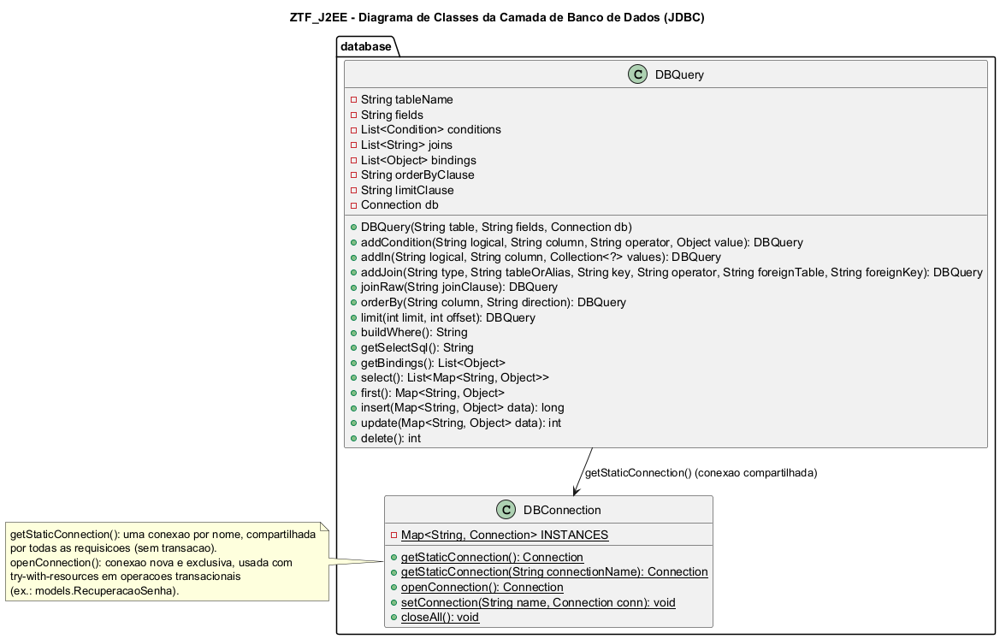
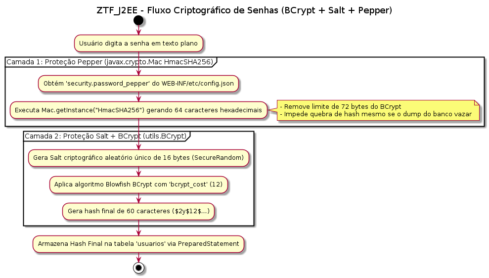
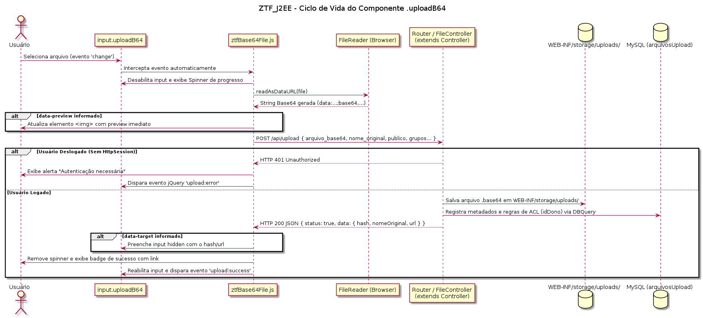
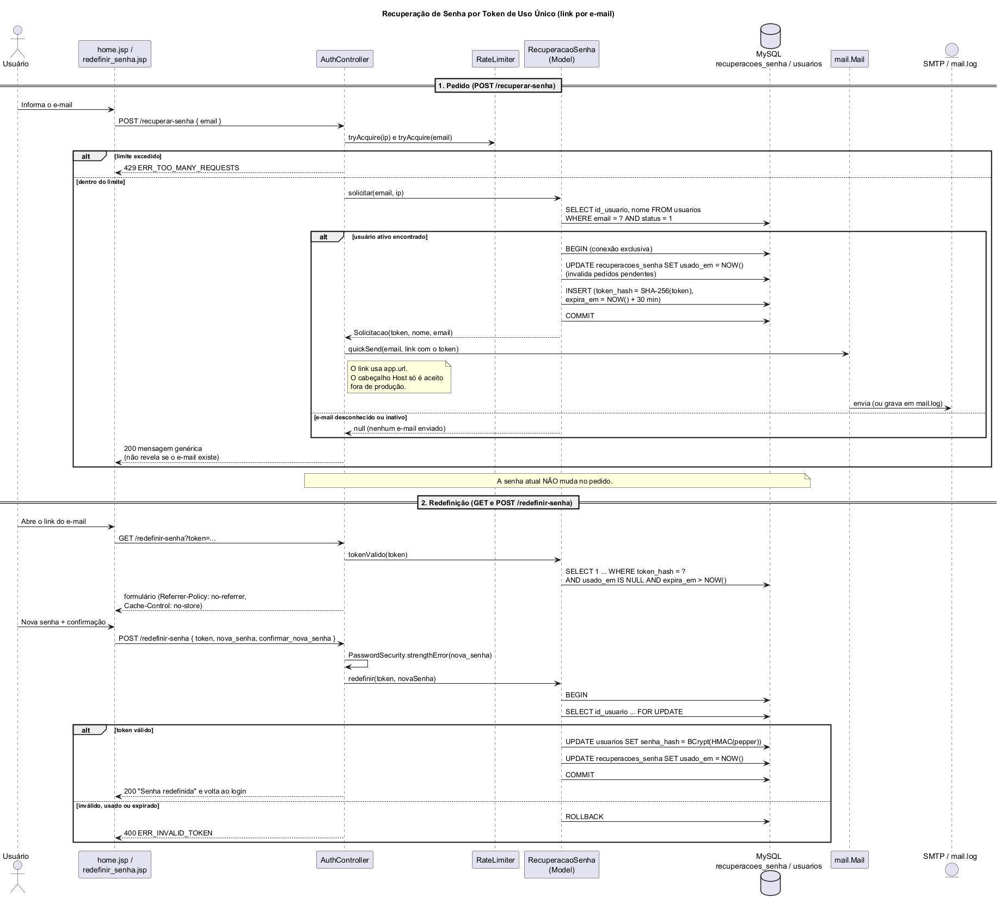

1. Por Onde Começar? (Roteiro de Estudo para os Alunos)
Bem-vindo ao ZTF_J2EE! Este framework foi projetado e desenvolvido pelo Professor Drº Cleber S. Oliveira (com agradecimento especial à Professora Drª Marcia Aparecida Silva Bissaco) com o objetivo didático de ensinar como construir aplicações corporativas em Java EE (Servlets, JSP e JDBC) limpas, desacopladas e seguras.
1Abra primeiro a pasta src/main/webapp/WEB-INF/etc/
Lá estão os dois arquivos que governam tudo: o config.json (que guarda as configurações de banco de dados, chave secreta Pepper de senhas, servidor de e-mail SMTP e caminhos) e o routes.json (que declara todas as URLs do sistema, se exigem login na sessão, quais grupos de usuários podem acessar e se a rota vai chamar um Controller, abrir uma página .jsp ou executar uma consulta SQL/DBQuery direta!).
2Entenda como o Java lê o Ambiente (utils.Config e utils.Url)
A classe utils.Config carrega o config.json em memória e permite buscar qualquer valor usando notação de ponto (ex: Config.getString("database.default", "mysql")). Já a classe utils.Url descobre dinamicamente o nome da pasta do projeto no Tomcat (request.getContextPath()), protocolo, host e porta para que você nunca escreva URLs fixas (hardcoded).
3Conheça a Camada de Banco de Dados (database.*)
Veja como database.DBConnection conecta em MySQL, PostgreSQL, Oracle e DB2; como database.DatabaseProvisioner cria o banco e as 7 tabelas do script.sql sozinho no primeiro acesso; e como database.DBQuery constrói consultas SQL fluentes com PreparedStatement automático.
4Compreenda o Ciclo HTTP: controllers.Controller, utils.Router e JSPs
Todos os controladores herdam de controllers.Controller extends HttpServlet e possuem sua anotação @WebServlet. Quando uma requisição chega, Controller.service() chama Router.dispatch(), que valida a sessão e as permissões no routes.json antes de executar o método do controlador (handle) ou uma consulta direta. E nas páginas .jsp, a primeira linha <% if (!Router.checkJspAccess(request, response)) return; %> protege até mesmo acessos diretos ao arquivo JSP!
5Analise os Exemplos Didáticos (ConsultaController e ChamadoController)
Abra controllers.ConsultaController para comparar uma consulta JDBC manual com uma consulta via DBQuery, e depois abra controllers.ChamadoController junto com src/main/webapp/chamados.jsp para ver um módulo completo funcionando de ponta a ponta!
2. Visão Geral da Arquitetura J2EE & Estrutura de Diretórios
O diagrama abaixo ilustra como os componentes do ZTF_J2EE interagem dentro do container Apache Tomcat:
Arquitetura Geral de Componentes do ZTF_J2EE

- Ativos estáticos em
/assets/*e/manual.htmlsão entregues diretamente peloDefaultServletnativo do Tomcat. - Acessos a páginas
/*.jspna raiz dewebappexecutam no cabeçalho a guardaRouter.checkJspAccess(request, response). - Requisições às rotas de negócio chegam ao
@WebServletda subclasse decontrollers.Controller, cujo método herdadoservice()vincula o contexto e delega paraRouter.dispatch(request, response, this). - O
Routervalida o banco viaDatabaseProvisioner, checa a ACL em memória a partir deWEB-INF/etc/routes.jsone despacha para uma View JSP, para um método de Controller (handle) ou executa uma consulta direta (query/dbquery) retornandoJsonResponse.
2.1 Árvore de Diretórios Enxuta do Projeto
Note que no Java EE a pasta WEB-INF/ já é protegida nativamente pelo servidor Tomcat contra acesso externo via navegador. Por isso, a raiz src/main/webapp/ abriga diretamente os assets/, o manual.html e as páginas .jsp (protegidas no topo por Router.checkJspAccess):
ZTF_J2EE/
├── src/main/java/
│ ├── controllers/ # Superclasse Controller (extends HttpServlet) e os 7 controladores (@WebServlet)
│ ├── database/ # DBConnection (Multi-SGBD), DatabaseProvisioner (Auto-Boot), DBQuery (Fluent Builder)
│ ├── mail/ # Mail (Jakarta Mail SMTP / Log) e Sms (Twilio REST / Log)
│ ├── models/ # Usuario (Autenticação, RBAC, Senha Temporária e Perfil)
│ ├── utils/ # Config, Router, Url, JsonResponse, RequestHelper, Sanitize, PasswordSecurity, BCrypt, CodeGenerator, Base64Files
│ └── tests/ # RunAllTests (Suíte com 82 testes automatizados)
└── src/main/webapp/
├── META-INF/context.xml # Habilita parsing multipart/form-data no Tomcat
├── assets/ # CSS (Bootstrap 5), JS (jQuery, ztf.js, ztfBase64File.js) e Diagramas UML (.png)
├── errors/ # Telas de erro (401.jsp, 403.jsp, 404.jsp, 500.jsp e db_error.jsp)
├── *.jsp # Telas da aplicação (home.jsp, login.jsp, main*.jsp, admin.jsp, chamados.jsp)
├── manual.html # Este Manual Interativo HTML do Aluno e Desenvolvedor
└── WEB-INF/ # Diretório privado do Container J2EE (inacessível via URL direta)
├── documentation/ # Código-fonte PlantUML (.puml) dos 9 diagramas arquiteturais
├── etc/ # Arquivos de governo: config.json, routes.json e script.sql
├── lib/ # 8 JARs atualizados (Gson, MySQL, PostgreSQL, Oracle, DB2, SQLite, Jakarta Mail e Activation)
├── storage/ # uploads/ (arquivos .base64) e logs/ (mail.log e sms.log)
└── web.xml # Descritor Servlet 4.0
Mapa Completo de Pacotes, Classes e Herança UML do ZTF_J2EE

javax.servlet.http.HttpServlet <|-- controllers.Controller centraliza a herança de todos os 7 controladores e se conecta aos pacotes utils, database, models e mail.
3. O Coração Declarativo: A Importância do config.json e do routes.json
Em projetos acadêmicos ou corporativos mal estruturados, é comum ver parâmetros de conexão JDBC, chaves secretas e regras de permissão espalhados dentro de dezenas de classes Java. Qualquer mudança de senha do banco ou de regra de acesso obriga o programador a caçar linhas de código, editar e recompilar o projeto inteiro.
No ZTF_J2EE, adotamos uma Arquitetura Guiada por Configuração Declarativa centrada em dois arquivos JSON dentro de src/main/webapp/WEB-INF/etc/:
3.1 O Papel Fundamental do WEB-INF/etc/config.json
O arquivo config.json concentra todas as variáveis de ambiente e infraestrutura da aplicação:
- Seção
database: Define qual é o SGBD padrão ("default": "mysql"), se o auto-provisionamento automático no boot está ativo ("auto_provision": true) e guarda os parâmetros de conexão para MySQL, PostgreSQL, Oracle e IBM DB2. - Seção
security: Define o segredo global"password_pepper"(usado peloPasswordSecurityno HMAC-SHA256 antes do BCrypt) e o custo exponencial"bcrypt_cost": 12. - Seções
mailesms: Permitem alternar entre o Modo de Simulação Didática ("simulate_in_dev": true, que grava os e-mails e SMS emWEB-INF/storage/logs/mail.logesms.logsem precisar de internet) e o Modo de Disparo Real via SMTP/Mailtrap e Twilio REST. - Seção
cors: Configura origens, métodos e cabeçalhos permitidos para requisições Cross-Origin.
{
"app": {
"name": "Zait Tiny Framework",
"short_name": "ZTF_J2EE",
"env": "development",
"debug": true
},
"database": {
"default": "mysql",
"auto_provision": true,
"connections": {
"mysql": {
"driver": "mysql",
"host": "127.0.0.1",
"port": 3306,
"dbname": "hospital",
"user": "root",
"password": "senha"
}
}
},
"security": {
"password_pepper": "ZTF20_J2EE_SuperSecretPepperKey_Cleber_2026_#987654321",
"bcrypt_cost": 12
}
}
3.2 O Papel Fundamental do WEB-INF/etc/routes.json: Apontar para um Controller Servlet OU Fazer Consulta Direta no Router!
No ZTF_J2EE, o roteador (
utils.Router) não serve apenas para chamar um Controller Servlet! Ao declarar uma rota em WEB-INF/etc/routes.json, você pode escolher entre:
- Entregar uma View JSP direta (
"path"); - Apontar para um Controller Servlet e um método de negócio (
"controller"+"action"); - Executar uma Consulta SQL Direta pelo próprio Router (
"query") — sem precisar escrever nenhum método Java no Controller; - Executar uma Consulta Estruturada via
DBQueryDireta pelo próprio Router ("dbquery") — também sem precisar escrever método Java no Controller!
Modalidade no routes.json |
Chave Declarada | Como o Router Executa? |
Quando Usar? |
|---|---|---|---|
| 1. View JSP Direta | "path": "main_admin.jsp" |
Valida sessão e grupos (ACL) e faz RequestDispatcher.forward() para a JSP. |
Telas e painéis que não precisam de lógica prévia no Controller. |
| 2. Controller Servlet | "controller": "ConsultaController","action": "consultaDbQuery" |
Instancia/usa o Servlet e invoca reflexivamente controller.handle(action, req, res). |
Regras de negócio, validações, cadastros, uploads, envios de e-mail ou múltiplos JOINs. |
| 3. Consulta SQL Direta no Router | "query": { "sql": "SELECT ...", "params": [...] } |
O próprio Router abre o PreparedStatement JDBC, injeta os parâmetros da requisição e retorna JsonResponse! |
APIs de consulta rápida onde criar um método Java no Controller seria código repetitivo. |
4. Consulta DBQuery Direta no Router |
"dbquery": { "tableName": "...", "fieldsName": [...], "where": {...} } |
O próprio Router instancia new DBQuery(...), aplica os filtros where e retorna JsonResponse! |
Listagens JSON simples filtradas por colunas da tabela diretamente pelo arquivo de rotas. |
Veja exemplos reais lado a lado no arquivo WEB-INF/etc/routes.json:
{
"__COMENTARIO_1__": "MODALIDADE 1: Apontando direto para uma View JSP com guarda de grupo estrita",
"/dashboard/admin": {
"get": {
"responseType": "html",
"path": "main_admin.jsp",
"session": { "required": true, "keys": ["id_usuario"] },
"groups": ["admin"],
"strictGroup": true
}
},
"__COMENTARIO_2__": "MODALIDADE 2: Apontando para um Controller Servlet e sua Action",
"/api/consulta-dbquery": {
"get": {
"responseType": "json",
"controller": "ConsultaController",
"action": "consultaDbQuery",
"session": { "required": false }
}
},
"__COMENTARIO_3__": "MODALIDADE 3: Consulta SQL Direta executada pelo próprio Router (sem método em Controller!)",
"/api/consulta-direta": {
"get": {
"responseType": "json",
"query": {
"sql": "SELECT id_usuario, nome, email, status, criado_em FROM usuarios ORDER BY id_usuario ASC"
},
"session": { "required": false }
}
},
"__COMENTARIO_4__": "MODALIDADE 4: Consulta DBQuery Direta executada pelo próprio Router",
"/api/grupos-sistema": {
"get": {
"responseType": "json",
"dbquery": {
"tableName": "grupos",
"fieldsName": ["id_grupo", "grupo", "descricao", "is_admin"],
"where": { "is_admin": 0 }
},
"session": { "required": true }
}
}
}
Fluxograma de Decisão do Router: ACL e as 4 Modalidades de Despacho

Router decide entre path (View JSP), controller (invocando controller.handle(action, req, res)), query (SQL direto com PreparedStatement) ou dbquery (instância direta de DBQuery).
4. Ciclo de Vida da Requisição: Servlets (@WebServlet) & Guarda nas JSPs
Para que a aplicação seja didática e segura sob qualquer cenário no Apache Tomcat, o ZTF_J2EE protege tanto as chamadas que entram pelos Servlets quanto os acessos diretos a arquivos .jsp:
-
Entrada via Controlador (
@WebServlet→Controller.service()): Cada classe emcontrollers.*possui sua anotação@WebServlete estendecontrollers.Controller. Quando o Tomcat entrega a requisição ao Servlet, o método herdadoController.service(request, response)vincula o contexto e chamaRouter.dispatch(request, response, this). -
Entrada Direta em Página JSP (
Router.checkJspAccess(request, response)): Como as páginas.jspficam na raiz desrc/main/webapp/, todas elas possuem logo após o cabeçalho<%@ page ... %>a chamada:<% if (!Router.checkJspAccess(request, response)) return; %>
Se um visitante tentar abrirhttp://localhost:8080/ZTFrameworkJ2EE/admin.jspdiretamente sem estar logado como administrador, oRouter.checkJspAccessconsulta as regras de/adminnoroutes.jsone interrompe a renderização imediatamente, exibindo a páginaerrors/401.jspouerrors/403.jsp!
Autenticação, População da HttpSession e Guarda ACL em Memória RAM

Árvore de Decisão: Ativos Estáticos vs JSP vs JSON para AJAX

5. Diagramas de Banco de Dados, Criptografia (BCrypt + Pepper) e Uploads Base64
Explore os 4 diagramas abaixo para visualizar o funcionamento interno da camada de persistência, criptografia e arquivos:
Arquitetura de Classes da Camada de Dados (DBConnection, DatabaseProvisioner & DBQuery)

Pipeline Criptográfico em Duas Camadas (Pepper HMAC-SHA256 + BCrypt Custo 12)

Ciclo de Vida do Upload Base64 (.uploadB64 → FileController → ACL em 5 Camadas)

Recuperação de Senha por Token de Uso Único (link por e-mail)

6. Aula Detalhada de Todas as 25 Classes do ZTF_J2EE (Pacote por Pacote)
Abaixo você encontra a explicação minuciosa de cada classe do projeto, seus métodos principais e exemplos de uso em Java:
Módulo I — Pacote utils (10 Classes de Infraestrutura, Roteamento e Segurança)
Classe 1: utils.Config (src/main/java/utils/Config.java)
Para que serve: Carrega o arquivo WEB-INF/etc/config.json em memória usando Google Gson e permite ler ou alterar qualquer chave através de notação de ponto (dot notation), como "database.connections.mysql.host". Funciona tanto dentro do Tomcat (via ServletContext.getResourceAsStream) quanto via linha de comando nos testes automatizados.
Métodos principais: bindServletContext(ctx), get(key, defaultVal), getString(key, defaultVal), getInt(key, defaultVal), getBoolean(key, defaultVal), has(key), set(key, value), reload() e readResourceText(relPath).
String driverPadrao = Config.getString("database.default", "mysql");
int custoBcrypt = Config.getInt("security.bcrypt_cost", 12);
boolean modoSimul = Config.getBoolean("mail.simulate_in_dev", true);
Classe 2: utils.Router (src/main/java/utils/Router.java)
Para que serve: É o motor de roteamento e controle de acesso do framework. Lê WEB-INF/etc/routes.json, normaliza a URI removendo o contextPath, faz o match de rotas estáticas e dinâmicas (ex: /arquivo/{hash}), aciona o DatabaseProvisioner, valida a HttpSession (401) e os grupos/permissões (403) e executa uma das 4 modalidades de destino: View JSP (path), Controller Servlet (controller + action), SQL direto (query) ou Query Builder direto (dbquery).
Métodos principais: dispatch(req, res, targetController), checkJspAccess(req, res), matchRoute(uri), checkAccessControl(routeConfig, userSession) e addRoute(uri, method, config).
// 1. Chamado automaticamente por Controller.service(): new Router().dispatch(request, response, this); // 2. Chamado na primeira linha de cada página JSP: if (!Router.checkJspAccess(request, response)) return;
Classe 3: utils.Url (src/main/java/utils/Url.java)
Para que serve: Resolve URLs e caminhos de forma 100% dinâmica a partir do HttpServletRequest ativo. Descobre sozinho o nome da pasta do projeto no Tomcat (request.getContextPath()), protocolo (http/https), domínio e porta. Se você renomear o projeto para outro nome, todos os links continuam funcionando automaticamente!
Métodos principais: bindRequest(req), base(req), to(req, path), full(req, path), asset(req, assetPath) e redirect(req, res, path).
String baseHref = Url.base(request); // ex: "/ZTFrameworkJ2EE/" String urlLogin = Url.to(request, "login"); // ex: "/ZTFrameworkJ2EE/login" String urlFull = Url.full(request, "dashboard"); // ex: "http://localhost:8080/ZTFrameworkJ2EE/dashboard"
Classe 4: utils.JsonResponse (src/main/java/utils/JsonResponse.java)
Para que serve: Garante que toda resposta de API ou chamada AJAX (jQuery $.ajax / ZTF.ajax) retorne exatamente o mesmo envelope JSON padronizado com 5 chaves: { status, code, error, message, data }, definindo também o HTTP Status Code e o cabeçalho Content-Type: application/json; charset=utf-8.
Métodos principais: send(res, status, httpCode, msg, data, errCode), success(res, data, msg) e error(res, httpCode, errCode, msg).
JsonResponse.success(response, Map.of("id", 10), "Registro salvo com sucesso!");
JsonResponse.error(response, 400, "ERR_VALIDACAO", "O campo e-mail é obrigatório.");
Classe 5: utils.RequestHelper (src/main/java/utils/RequestHelper.java)
Para que serve: Unifica a captura de parâmetros enviados pelo navegador. Não importa se o cliente enviou os dados via query string (GET), formulário tradicional (POST urlencoded), formulário com arquivo (multipart/form-data), corpo JSON (application/json) ou parâmetro de rota dinâmica ({hash}): o RequestHelper junta tudo em um único Map<String, Object>! Também fornece acesso tipado aos dados do usuário logado na HttpSession.
Métodos principais: getRequestPayload(req), getParam(req, key, defaultVal), getSessionUser(req), getSessionUserId(req), getSessionUserGroups(req) e getRouteParams(req).
Classe 6: utils.Sanitize (src/main/java/utils/Sanitize.java)
Para que serve: Higieniza dados de entrada e saída para impedir ataques de Cross-Site Scripting (XSS) e falhas de conversão numérica.
Métodos principais: string(val) (remove tags HTML e scripts), escapeHtml(val) (escapa &, <, >, ", ' para exibição segura em JSPs), email(val), intVal(val, defaultVal), floatVal(val, defaultVal), alphaNum(val) e map(data).
Classe 7: utils.PasswordSecurity (src/main/java/utils/PasswordSecurity.java)
Para que serve: Protege senhas em duas camadas criptográficas: primeiro aplica HmacSHA256 usando a chave secreta security.password_pepper do config.json (gerando 64 caracteres hexadecimais e superando o limite de 72 bytes do BCrypt) e em seguida aplica o hashing adaptativo BCrypt com custo 12 e Salt CSPRNG.
Métodos principais: hash(plainPassword), verify(plainPassword, hashedPassword) e needsRehash(hashedPassword).
Classe 8: utils.BCrypt (src/main/java/utils/BCrypt.java)
Para que serve: Implementação completa em Java puro do algoritmo de hashing Blowfish OpenBSD (compatível com prefixos $2a$ e $2y$).
Métodos principais: gensalt(logRounds), hashpw(password, salt) e checkpw(plaintext, hashed).
Classe 9: utils.CodeGenerator (src/main/java/utils/CodeGenerator.java)
Para que serve: Gera senhas temporárias fortes, códigos numéricos OTP (6 dígitos para SMS/2FA) e tokens hexadecimais usando java.security.SecureRandom (CSPRNG).
Métodos principais: generatePassword(length), generateNumericCode(digits) e generateToken(byteLength).
Classe 10: utils.Base64Files (src/main/java/utils/Base64Files.java)
Para que serve: Converte arquivos binários em Strings Base64 (com cabeçalho Data URI data:mime/type;base64,...) e reconstrói arquivos no disco a partir de Strings Base64.
Métodos principais: fileToBase64(filePath, withMimePrefix), base64ToFile(base64String, outputFilePath), extractMimeType(base64DataUri) e estimateDecodedSize(base64String).
Módulo II — Pacote database (3 Classes de Persistência JDBC e Auto-Provisionamento)
Classe 11: database.DBConnection (src/main/java/database/DBConnection.java)
Para que serve: Gerencia as conexões JDBC da aplicação. Lê os parâmetros da seção database.connections do config.json e suporta MySQL/MariaDB, PostgreSQL, Oracle Database, IBM DB2 e SQLite, mantendo as conexões ativas e reconectando automaticamente se houver queda.
Métodos principais: getStaticConnection(), getStaticConnection(connectionName), setConnection(name, conn) e closeAll().
Classe 12: database.DatabaseProvisioner (src/main/java/database/DatabaseProvisioner.java)
Para que serve: Implementa o auto-provisionamento (Self-Healing) no boot. Na primeira requisição, verifica se o banco de dados hospital existe (criando-o com CREATE DATABASE IF NOT EXISTS em utf8mb4) e confere se as 7 tabelas do sistema existem; caso falte alguma, executa automaticamente todas as instruções DDL e DML do arquivo WEB-INF/etc/script.sql.
Métodos principais: checkAndProvision(), ensureProvisioned() e resetState().
Classe 13: database.DBQuery (src/main/java/database/DBQuery.java)
Para que serve: É o Fluent Query Builder do framework. Permite construir consultas SQL encadeando métodos em Java, gerando PreparedStatement com bind automático de parâmetros (100% imune a SQL Injection) e travas de segurança que proíbem UPDATE ou DELETE sem cláusula WHERE.
Métodos principais: addCondition(logical, col, op, val), addIn(logical, col, values), addJoin(...), joinRaw(joinSql), orderBy(col, dir), limit(limit, offset), select(), first(), insert(dataMap), update(dataMap) e delete().
List<Map<String, Object>> chamados = new DBQuery("chamados c", "c.*, u.nome AS solicitante")
.joinRaw("INNER JOIN usuarios u ON u.id_usuario = c.id_usuario")
.addCondition("AND", "c.status", "=", "aberto")
.orderBy("c.id_chamado", "DESC")
.select();
Módulo III — Pacote mail (2 Classes de E-mail e SMS)
Classe 14: mail.Mail (src/main/java/mail/Mail.java)
Para que serve: Envia e-mails HTML em UTF-8 via Jakarta Mail (javax.mail) usando servidor SMTP (ex: Mailtrap, Gmail, SES) ou registra o disparo no arquivo WEB-INF/storage/logs/mail.log quando mail.simulate_in_dev é true no config.json.
Métodos principais: setRecipient(email, name), setSubject(subject), setBody(htmlBody), send() e quickSend(toEmail, toName, subject, htmlBody).
Classe 15: mail.Sms (src/main/java/mail/Sms.java)
Para que serve: Envia mensagens SMS e códigos OTP via API REST da Twilio (usando URI.create(endpoint).toURL().openConnection()) ou grava em WEB-INF/storage/logs/sms.log no modo de simulação em desenvolvimento.
Método principal: Sms.send(toPhoneNumber, message).
Módulo IV — Pacote models (1 Classe de Domínio RBAC)
Classe 16: models.Usuario (src/main/java/models/Usuario.java)
Para que serve: Modela toda a regra de negócio de usuários, autenticação criptográfica (PasswordSecurity.verify), carregamento de grupos (usuarios_grupos) e permissões (grupos_permissoes), criação de conta com senha temporária automática, atualização de perfil com foto Base64 e governança administrativa.
Métodos principais: autenticar(email, senhaPlana), buscarPorId(id), buscarPorEmail(email), obterGrupos(idUsuario), obterPermissoes(idUsuario), criarComSenhaTemporaria(nome, email, grupos), atualizarPerfil(id, nome, novaSenha, fotoB64), redefinirSenhaPorEmail(email), listarTodosComGrupos(), sincronizarGruposUsuario(id, idsGrupos) e alternarStatus(id, ativo).
Módulo V — Pacote controllers (Superclasse Controller e os 7 Controladores Web)
Classe 17: controllers.Controller (src/main/java/controllers/Controller.java)
Para que serve: Superclasse abstrata que estende javax.servlet.http.HttpServlet. Todos os controladores da aplicação herdam dela. Ela sobrescreve service(request, response) para invocar automaticamente o Router.dispatch(request, response, this) e implementa o método reflexivo handle(action, request, response) que chama o método da action na subclasse, além de fornecer atalhos prontos para as subclasses.
Métodos principais: init(), service(req, res), handle(action, req, res), renderView(req, res, viewName), jsonSuccess(res, data, msg), jsonError(res, code, err, msg), getPayload(req), getParam(req, key, def), getSessionUser(req) e redirect(req, res, path).
Classe 18: controllers.AuthController (@WebServlet: /login, /cadastro, /recuperar-senha, /redefinir-senha, /logout)
Para que serve: Controla a exibição da tela de login (loginPage), a validação de credenciais com criação da HttpSession e redirecionamento por perfil (loginAuth), o auto-cadastro com envio de senha temporária por e-mail (registerAuth), a recuperação de senha por token de uso único enviado por e-mail (recuperarSenha, redefinirSenhaPage e redefinirSenha, com limite de tentativas e resposta genérica que não revela se o e-mail existe) e o encerramento seguro da sessão (logout). No login, a sessão anterior é invalidada para evitar Session Fixation.
Classe 19: controllers.DashboardController (@WebServlet: /dashboard, /dashboard/*)
Para que serve: Direciona o usuário logado para o painel correspondente ao seu nível de acesso (main_admin.jsp, main_gerente.jsp, main_financeiro.jsp, main_suporte.jsp ou main.jsp).
Classe 20: controllers.PerfilController (@WebServlet: /api/perfil/atualizar)
Para que serve: Processa a atualização cadastral do próprio usuário autenticado (nome, nova senha opcional e foto de perfil em Base64), mantendo o e-mail imutável por segurança e sincronizando os novos dados na HttpSession.
Classe 21: controllers.AdminController (@WebServlet: /admin, /api/admin/*)
Para que serve: Exclusivo para membros do grupo admin. Gerencia a listagem de usuários, atribuição de grupos RBAC, bloqueio/ativação de contas e a matriz de permissões por grupo.
Classe 22: controllers.FileController (@WebServlet: /api/upload, /api/arquivos, /arquivo/*)
Para que serve: Recebe uploads em Base64 enviados pelo componente assets/js/ztfBase64File.js, armazena em WEB-INF/storage/uploads/*.base64, registra a ACL na tabela arquivos_upload e valida as 5 camadas de permissão antes de decodificar e entregar o arquivo no download.
Classe 23: controllers.ChamadoController (@WebServlet: /chamados, /api/chamados/novo)
Para que serve: Controlador didático enxuto que demonstra como listar registros com DBQuery.joinRaw() para uma JSP (chamados.jsp) e como inserir registros via AJAX retornando jsonSuccess().
Classe 24: controllers.ConsultaController (@WebServlet: /api/consulta-direta, /api/consulta-sql, /api/consulta-dbquery)
Para que serve: Classe comparativa para estudo em laboratório: contrasta a execução de uma consulta SQL pura com PreparedStatement manual (consultaDireta), uma consulta fluente com DBQuery e LEFT JOIN (consultaDbQuery) e a rota /api/consulta-direta executada diretamente pelo Router via chave "query" do routes.json!
Módulo VI — Pacote tests (1 Classe de Verificação Automatizada)
Classe 25: tests.RunAllTests (src/main/java/tests/RunAllTests.java)
Para que serve: Executa 9 baterias de testes automatizados (82 verificações) cobrindo Config, PasswordSecurity, BCrypt, CodeGenerator, Sanitize, Base64Files, os 5 drivers JDBC, DatabaseProvisioner, DBQuery, Router, herança de Controller, Mail, Sms, Usuario, Url dinâmica e a presença de todas as páginas JSP.
7. Tutorial Prático: Criando uma Funcionalidade do Zero em 3 Passos
Veja como é simples criar um novo recurso no ZTF_J2EE:
Passo 1: Declare a rota no WEB-INF/etc/routes.json
Você pode optar por uma consulta direta no Router (sem precisar criar Controller) ou apontar para um Controller Servlet:
{
"__OPCAO_A__": "Consulta direta pelo Router sem precisar criar método no Controller!",
"/api/chamados-abertos": {
"get": {
"responseType": "json",
"dbquery": {
"tableName": "chamados",
"fieldsName": ["id_chamado", "titulo", "status", "aberto_em"],
"where": { "status": "aberto" }
},
"session": { "required": true }
}
},
"__OPCAO_B__": "Apontando para um Controller Servlet (ChamadoController)",
"/chamados": {
"get": {
"responseType": "html",
"controller": "ChamadoController",
"action": "index",
"session": { "required": true, "keys": ["id_usuario"] }
}
}
}
Passo 2: Crie o Controlador herdando de controllers.Controller
package controllers;
import database.DBQuery;
import java.io.IOException;
import java.util.LinkedHashMap;
import java.util.List;
import java.util.Map;
import javax.servlet.ServletException;
import javax.servlet.annotation.WebServlet;
import javax.servlet.http.HttpServletRequest;
import javax.servlet.http.HttpServletResponse;
import utils.Sanitize;
@WebServlet(name = "ChamadoController", urlPatterns = {"/chamados", "/api/chamados/novo"})
public class ChamadoController extends Controller {
private static final long serialVersionUID = 1L;
public void index(HttpServletRequest request, HttpServletResponse response) throws ServletException, IOException {
List<Map<String, Object>> chamados = new DBQuery("chamados c", "c.*, u.nome AS solicitante")
.joinRaw("INNER JOIN usuarios u ON u.id_usuario = c.id_usuario")
.orderBy("c.id_chamado", "DESC")
.select();
request.setAttribute("chamados", chamados);
renderView(request, response, "chamados.jsp");
}
public String criar(HttpServletRequest request, HttpServletResponse response) throws IOException {
Map<String, Object> payload = getPayload(request);
String titulo = Sanitize.string(payload.get("titulo"));
String descricao = Sanitize.string(payload.get("descricao"));
if (titulo.isEmpty()) {
return jsonError(response, 400, "ERR_VALIDATION", "O título do chamado é obrigatório.");
}
int idUsuario = getSessionUserId(request);
Map<String, Object> insertData = new LinkedHashMap<>();
insertData.put("id_usuario", idUsuario);
insertData.put("titulo", titulo);
insertData.put("descricao", descricao);
insertData.put("status", "aberto");
long novoId = new DBQuery("chamados").insert(insertData);
return jsonSuccess(response, Map.of("id_chamado", novoId), "Chamado aberto com sucesso!");
}
}
Passo 3: Crie a View JSP na raiz de src/main/webapp/ com a guarda do Router
<%@ page language="java" contentType="text/html; charset=UTF-8" pageEncoding="UTF-8"%>
<%@ page import="utils.Router, utils.Url, utils.Sanitize" %>
<%
if (!Router.checkJspAccess(request, response)) return;
String baseHref = Url.base(request);
%>
<!DOCTYPE html>
<html lang="pt-BR">
<head>
<meta charset="UTF-8">
<base href="<%= Sanitize.escapeHtml(baseHref) %>">
<link rel="stylesheet" href="assets/css/bootstrap.min.css">
</head>
<body>
<!-- Conteúdo da View -->
</body>
</html>
8. Credenciais de Demonstração & Suíte de Testes Automatizados
Ao iniciar o projeto, o DatabaseProvisioner cria automaticamente os 5 perfis abaixo para testes de RBAC:
| Perfil / Grupo | E-mail de Login | Senha | Painel Principal |
|---|---|---|---|
| Administrador (Nível 1) | admin@hospital.local | admin123 | main_admin.jsp |
| Gerente (Nível 2) | gerente@hospital.local | gerente123 | main_gerente.jsp |
| Financeiro (Nível 4) | financeiro@hospital.local | financeiro123 | main_financeiro.jsp |
| Suporte (Nível 5) | suporte@hospital.local | suporte123 | main_suporte.jsp |
| Usuário Padrão (Nível 3) | usuario@hospital.local | usuario123 | main.jsp |
Executando as 82 Verificações Automatizadas (tests.RunAllTests) via Terminal:
javac --release 21 -encoding UTF-8 -Xlint:all,-path \ -cp "src/main/webapp/WEB-INF/lib/*:/home/zait/PortableApps/apache-tomcat-9.0.121/lib/servlet-api.jar" \ -d build/classes $(find src/main/java -name "*.java") java -cp "build/classes:src/main/webapp/WEB-INF/lib/*:/home/zait/PortableApps/apache-tomcat-9.0.121/lib/servlet-api.jar" \ tests.RunAllTests
9. Sistema Integrado de Gestão Clínica e Hospitalar
O sistema hospitalar foi construído sobre o ZTF_J2EE, sem trocar a arquitetura: cada módulo é um
Controller com @WebServlet, um model com JDBC (database.Sql, sempre com
PreparedStatement), uma JSP protegida por Router.checkJspAccess e rotas no
routes.json com session, permissions e, nas telas clínicas,
groups + strictGroup. Os exemplos originais do framework continuam funcionando.
Perfis hospitalares (dados fictícios de demonstração)
| Perfil | Senha | O que faz | |
|---|---|---|---|
| Administrador | admin@hospital.local | admin123 | Usuários e permissões, profissionais, especialidades, disponibilidade dos médicos, auditoria. Não acessa dados clínicos. |
| Recepção | recepcao@hospital.local | recepcao123 | Pacientes, agenda de consultas e de exames, chegada, cancelamento e remarcação. |
| Enfermagem | enfermeiro@hospital.local | enfermeiro123 | Fila de triagem, sinais vitais, classificação de prioridade e retificação. |
| Médico | medico@hospital.local | medico123 | Fila de atendimento, prontuário, evoluções, alergias, receitas e pedidos de exame. |
Módulos e telas
| Módulo | Telas | Classes | Regras principais |
|---|---|---|---|
| Pacientes | /pacientes, ficha, cadastro | PacienteController, Paciente | CPF válido e único; exclusão só lógica; nenhuma tela de cadastro mostra dado clínico. |
| Profissionais | /profissionais, /especialidades | ProfissionalController, Profissional, Especialidade | CRM/UF e COREN/UF únicos; médico com ao menos uma especialidade; o acesso pode ser criado junto, com senha temporária por e-mail e troca no primeiro login; não inativa médico com consultas futuras. |
| Agenda | /agenda, /agenda/nova, /agenda/{id}/remarcar, /exames | AgendaController, Agenda, AgendaExames | Só horários da disponibilidade; sem sobreposição (trava FOR UPDATE + UNIQUE); remarcar cancela a original e cria a ligada na mesma transação. |
| Triagem | /triagem | TriagemController, Triagem | Um enfermeiro por vez; faixas plausíveis de sinais vitais; retificação com motivo, versão anterior preservada. |
| Atendimento | /atendimento | AtendimentoController, Atendimento, Receita, SolicitacaoExame | Prontuário com versões; finalizado vira imutável (só adendos); receita impressa com CRM; triggers no banco impedem alteração. |
| Histórico | /pacientes/{id}/historico | HistoricoController, VinculoClinico | Médico com vínculo vê tudo; enfermagem vê triagens e alergias; recepção só o administrativo; sem vínculo: 403 auditado. |
| Auditoria | /auditoria | AuditoriaController, ConsultaAuditoria | Somente leitura (triggers bloqueiam UPDATE/DELETE); nunca guarda conteúdo clínico, senha ou token; a própria consulta é registrada. |
| Notificações | aba "E-mails enviados" da auditoria | Notificacao + mail.Mail | Agendamento, cancelamento, remarcação, exame e acesso criado; sem dado clínico; falha no envio não desfaz a operação; em desenvolvimento o texto vai para WEB-INF/storage/logs/mail.log. |
Roteiro rápido para testar o fluxo completo
- Recepção: cadastre um paciente, agende uma consulta para hoje e clique em Registrar chegada.
- Enfermagem: na fila de triagem, inicie, preencha os sinais vitais e escolha a cor.
- Médico: na fila de atendimento, inicie, preencha o prontuário, emita uma receita, peça um exame e finalize.
- Recepção: abra o histórico do paciente (só a parte administrativa aparece) e teste Remarcar numa consulta futura.
- Administrador: cadastre um profissional com acesso novo, ajuste a disponibilidade e confira tudo em Auditoria.
Testes automatizados (JUnit 5, sem Maven)
Os testes de integração criam um banco temporário, rodam e o apagam; o banco de desenvolvimento não é tocado.
testar.bat (Windows) ./testar.sh (Linux, macOS, Git Bash)
Na IDE: IntelliJ (botão direito em src/test/java › Run 'All Tests') ou Eclipse (Run As › JUnit Test).
O passo a passo de instalação e execução em cada IDE está no README.md.
Diagramas atualizados em WEB-INF/documentation/*.puml (imagens em assets/images/diagrams/):
casos de uso, modelo conceitual, ER, classes, estados da consulta, sequência de agendamento e do fluxo clínico.